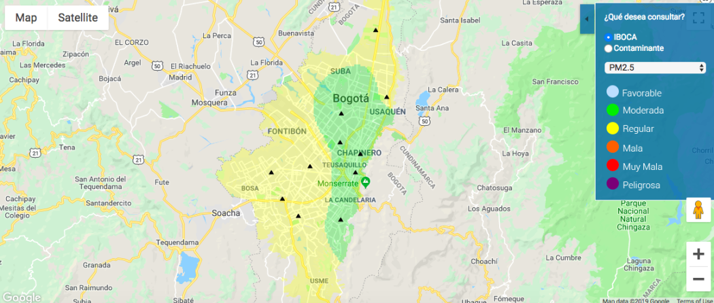

De los diferentes agentes contaminantes que se encuentran en el aire de la ciudad de Bogotá, se identifican los 6 que tienen mayor afectación a la salud y al medio ambiente, los cuales son el PM2.5, PM10, ozono, dióxido de nitrógeno, dióxido de azufre y monóxido de carbono. Así pues, en la búsqueda de información con respecto a plataformas de monitoreo, se consolidan los más significativos a nivel internacional, nacional y local, sacando como resultado 2 por cada nivel obteniendo un total de 6 antecedentes de distintos tipos. Finalmente, en el análisis de la plataforma RMCAB, se evalúa la información de las 19 estaciones que han estado funcionando en la ciudad de Bogotá, midiendo su rendimiento en el transcurso del semestre, lo que compone la funcionalidad de cada uno de los puntos, su efectividad en cuanto a los resultados que proyecta y el cómo se muestra la información.